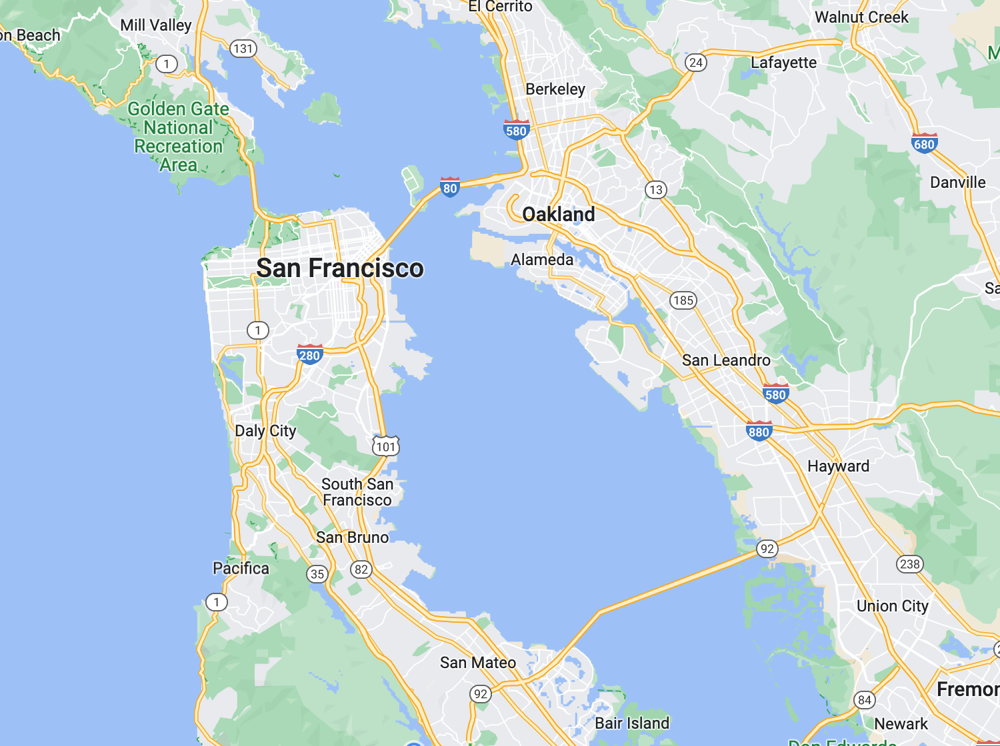
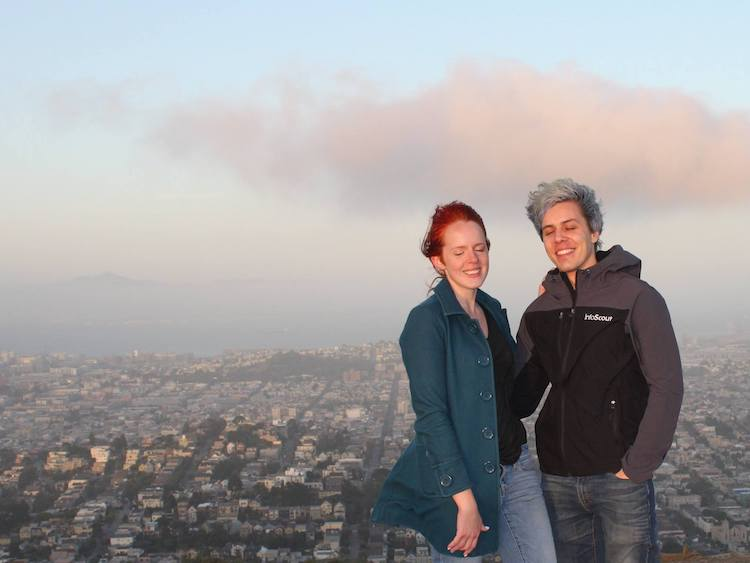

Travel
What to do while you're here
Planning Your Trip
We're excited to welcome those of you traveling to the San Francisco Bay Area! You'll quickly find that there's so much to see and that we're really only scratching the surface here on this page.
If you are able, we recommend staying for a week, particularly for first-time visitors. February 14th-21st may best overlap with others traveling (we'll continue to update as others inform us of their traveling plans).
We don't have a travel agent, so you'll need to book flights and accomodations directly. We hope this page can provide some guidance and ideas, but feel free to reach out to either of us if you have any additional questions. We recommend booking sooner rather than later, prices will especially shoot upwards in the three months leading up to the wedding.
Where to Stay
Of course if you plan on spending most of your time in San Francisco, staying in the city is ideal. But as everyone knows, the city is very expensive. Staying outside of the city in the East Bay (cities like Oakland or Berkeley) near a BART station or in the peninsula (cities like San Bruno, Burlingame or San Mateo) near a Caltrain station can be good options and still provide easy access to San Francisco.
The wedding venue is on the border of Oakland & Berkeley, so if you're only staying for a few days, the East Bay could be a great option. Another way to save a few bucks is to rent an Airbnb with others traveling.
Getting Around

Some of you may prefer to rent a car while you're here, but who wants to park on those California hills? Fortunately, the city and surrounding area is very navigable by BMW: *ahem* that is BART, Muni, & walking. Muni is the local transportation agency in San Francisco (including subways, street cars, and buses) for intra-city transit. BART is an inter-city heavy-rail transit system connecting San Francisco with the East Bay and South Bay. You can also take the Caltrain, which travels south from San Francisco down to San Jose. The bay area also has a ferry. All of these options accept the Clipper card for payment, which you can get digitally in your Apple or Google wallet.
If you do choose to rent a car, here are a few tips to keep in mind: When parking, bring your valuables with you and never leave anything visible in your car, especially in the city. Smash & grabs are common, Katrina & I have even witnessed them on multiple occasions. Don't rent a car with tinted windows, this makes a break-in even more tempting for thieves. Getting free parking in the city can be difficult, but the app SpotAngels can be a useful tool!
When in San Francisco
One thing about your trip to San Francisco is for certain — you won't be bored. Hopefully this section can provide some inspiration of what to check out while you're here, but it certainly shouldn't be treated as an exhaustive list.
That said, here are some of our personal highlights —
Landmarks

If you're a fan of architecture, there are plenty of sites worth visiting. For Victorian houses, check out The Painted Ladies— a group of homes that were repainted charming shades of pastel in the 1960s. Do you think Art Deco architecture is the bee's knees? Take a stroll over the Golden Gate Bridge, like we did!
Head over to Lombard Street at Hyde to see the "crookedest street in the world". Also consider visiting Coit Tower, built in 1933. At 210 feet, you'll have a fantastic view of the city. Rounding out our suggestions for landmarks is The Palace of Fine Arts. The Beaux Arts style structure was originally built in 1915, but was demolished in the 1960s due to instability. It was rebuilt in the 60s and 70s.
Trails & Views
San Francisco is blessed with many easy and stunning trails. Land's End & Lovers' Lane are a few of our favourites, not to mention the extraordinary 55 acres of botanical gardens in Golden Gate Park. Here we are at Interior Greenbelt in the middle of the city.
Where there are hills, there are views. Billy Goat Hill, Corona Heights Park, and Grandview Park all provide great views of the city. From Baker Beach you can see the Golden Gate Bridge. It may be windy, but you can't beat watching the sunset from the summit of Twin Peaks.
Activities
Some would call it a tourist trap, but Pier 39 and the Fisherman' Wharf neighbourhood of San Francisco have plenty of family-friendly activities to enjoy including a wax museum, arcades, and the Ghirardelli Marketplace.
Stroll just a bit down the Embarcadero to find our first museum recommendation— the Exploratorium, a mad scientist's playground. On the east side of the city you'll find the SF Museum of Modern Art, one of the largest art museums in the US. If you're a Disney fan, be sure to check out the Walt Disney Family museum, which was founded by one of Disney's daughters, and has a 12 foot diameter model of Disneyland. The museum is surprisingly large, and has interesting exhibitions and screening events. Finally in Golden Gate Park you'll find the California Academy of Sciences, a museum of natural history with a funky green roof inspired by San Francisco hills. The museum features a planetarium, aquarium, and an indoor rainforest.
While in Golden Gate Park, tour the Conservatory of Flowers and the Japanese Tea Garden. You can also swing by Stow Lake for a bit of row boating or pedal boating. For a blast to the past, check out the Haight Ashbury district. You'll be feeling groovy in no time, when you check out the vintage clothing stores and buy some vinyl over at Amoeba Music. The area is also home to a giant leg sculpture dangling out of a window, comfort foods like over at Hippie Thai, and its many smoke shops.
Chinatown in San Francisco is worth a visit— it's the oldest Chinatown in North America. Dragon's Gate, a beautiful and ornate structure, greets you when you enter. Dim sum, bakeries, herbal medicine, souvenirs— it can all be found in the area. For some summery vibes, check out Sausalito or Santa Cruz! Sausalito is just a ferry ride away from SF, and you can experience kayaking, seafood eats, and novelty stores (think fudge or Christmas ornaments year round). Santa Cruz is further out (you'll need to rent a car), and definitely more thrill packed. There's a small theme park by the beach for you roller coaster fans, and a pretty sizable pier with lots of entertainment. If you're checking out the park be sure to go on a weekend, when rides are typically open. In February, it's best to confirm the amusement park schedule ahead of time. Wintertime in Lake Tahoe will be pretty familiar to our Canadian guests! Skiing, snowboarding, and other winter activities are popular in February.
Food
We promise, San Francisco is more than just the land of avocado toast. SF is a melting pot of cultures, and as a result, cuisines! Japantown is a 23 acre area in the center of the city, and the site of our first pick, On the Bridge restaurant. They specialize in Japanese curry, and creative pasta dishes. As an ode to popular culture, they frequently play Japanese animation on their tv's. Japantown has great sushi options, but for our next favorite, go to Potrero Hill district. At Live Sushi Bar, you'll have a contemporary and sleek setting for delicious and fresh dishes. Not a fan of fish? Try out Shizen, which creatively uses vegetables (like okra and beets!!) instead of fish. This vegan sushi restaurant is quintessential San Francisco.
Another classic SF to-do is Mexican food. Mission district has a lot of amazing options, so we will leave you to discover these yourself! Also in the Mission district is Izakaya Goku, our favorite place to grab a bowl of ramen! Izakaya Goku is a small, laidback place to unwind with a beer and slurp up some noodles. If you're in a mood for European food, head over to Hayes Valley, for our next two picks. For French cuisine, try out Chez Maman, which has both classic (escargot!) and more "Americanized" choices to pick from. You can see what Katrina went ahead with… For German food, try Suppenküche! We highly recommend the currywurst.
Nightlife & Breweries
Yo ho ho and a bottle of rum can be found in our first bar recommendation— Smuggler's Cove. This is the ideal place to sip on some grog and pretend to be a pirate. If you'd rather not weigh anchor, and would rather have a pint of Anchor Steam, take a tour of Anchor Brewing in the Potrero district. Other great options for beer include Magnolia Brewing in the Haight, or Biergarten in Hayes Valley.
If you're looking for an island getaway, Pagan Idol offers up an immersive tiki experience. For a film noir/speakeasy vibe, go to Wilson & Wilson, a secret bar within a bar. Be sure to make a reservation to get the password! When you've solved the case, settle down with a book at Novela, a literary themed cocktail bar with drinks named after characters. If you feel like venturing outside of the city during your visit, stop by Napa, California's wine country.